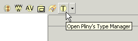
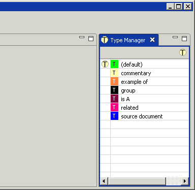
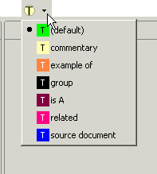
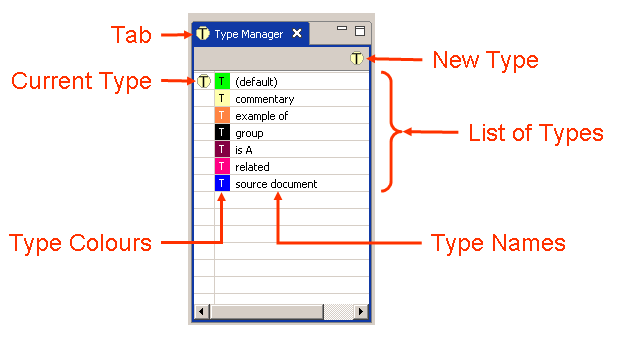
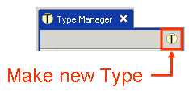
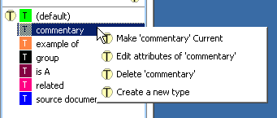
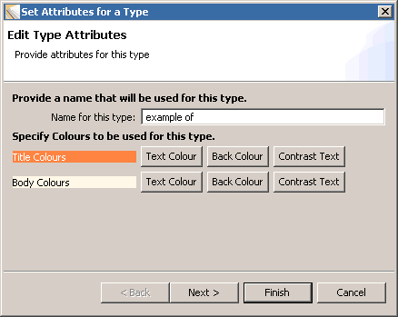
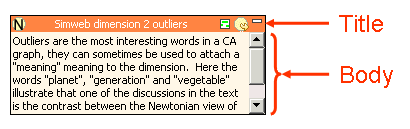
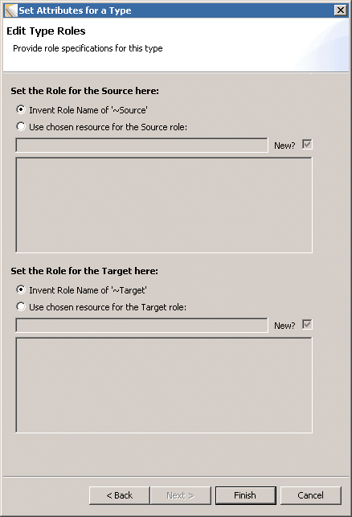

|
|
Reference objects and connections in a reference/annotation area can each be assigned a type -- the type allows one to assert the kind of reference or connection it is, and by "kind" we mean the nature of the relationship between the the two objects that are connected by the reference object or the connection. The Type Manager View allows you to define what types you want to have and to associated attributed to these types:
In addition, Pliny maintains a current type which it automatically assigns to new reference objects and connections when they are created. With the Type Manager you can set the current type to one of the types you have defined. Of course although the current type is automatically assigned to a newly created reference object or connection when it is first created it can subsequently be changed. To change it after it has been created select the item you want to change, and then choose "Set Type To..." from the contextual menu which you request by clicking with the other mouse button.
You can ask for the note search view to be displayed by pushing the
Type Manager View icon ( ) in
Pliny's main toolbar very near the top of Pliny's window:
) in
Pliny's main toolbar very near the top of Pliny's window:

Normally the Note Search View will appear at the right end of Pliny's window:

If you don't like having the type manager taking up space at the right side of Pliny, then you can drag its tab to the left end -- where it will stack on top of other views already there, or to the top and bottom of the screen (although it is designed to work best in a portrait- rather than landscape-oriented space. You can even drag it outside of Pliny's window altogether. See the discussion about this in the section "Moving viewpanes out of the Pliny main window" in the topic Managing Panes.
The Type Manager View icon has a drop-down button ( ) beside it. Use this as a shortcut way to change
the current type to one of the types you have available. If you click on this
button a menu will appear:
) beside it. Use this as a shortcut way to change
the current type to one of the types you have available. If you click on this
button a menu will appear:

You will see a list of all the types you have currently available to you (ordered alphabetically by type name). Your list may well be different from this (when you first start using Pliny your list will have only two items in it, for example, since Pliny starts up with only two types defined for you -- any others in the list will have to be ones you have created yourself, or have brought in through importing items from an import file).
The item in the list you see with the dot to its left is the current type. Click on one of the items in the list to make it the new current type. From then on until you change the current type again or until you close down Pliny, the type you have set will be associated with each newly created reference object or connection.
The Type Manager view (with its parts labelled) is:

The parts are:
One can interact with the Type Manager in several ways:
Drag and Drop operations into or out of the Type Manager and direct editing are not supported.
There is only one icon on the Type Manager's menu:

Click on it when you wish to create a new type. It invokes the Type Wizard to allow you to provide a name, set colours for it, etc. See the Type Wizard section below for details.
Invoke the contextual menu by clicking on a type in the list with the other mouse button, or on one-button Macintosh holding down the Ctrl key while clicking. The contextual menu is generated that connects with the selected type in the Type Manager:

The commands are:
Only two menubar/keyboard operations are supported:
The Type Wizard is invoked when you are creating a new type or changing the attribute of an existing one. It is the place where you can specify:
There are two screens associated wtih the Type Wizard. The first screen looks like this:

The colours section probably requires more explanation. Associated with a type are two sets of colours -- four colours in all. The first set is used to display the title area in a reference object and the colour associated with a collection line. The second set is used to display the content/body of a reference object:

In both cases there are two colours involved -- the colour to display the text and the colour to display the background. In our example, then, the four colours are:
There are, then, four buttons to select colours -- two to the right of the Title Colours area, and two to the right of the Body Colours area. Click on one of them to specify the appropriate colour. You will get, as a response, the standard colour selection tool provided by your operating system and can use it to change the colour as you wish.
There is also a Contrast Text button: use it to ask Pliny to choose a contrasting colour for the background colour. I have found, however, that Pliny has even worse colour sense than I do -- so you will probably find that after you have asked Pliny to choose the text colour for you that you will then want to go and do it yourself.
If you only wish to provide a name and colours for your type, click on the Finish button to close the wizard. However, there is a second screen for information about the current type, but it is only relevant if you plan to export your data into a Topic Map. If you plan to do this you probably don't need to be told what a Topic Map is! However, if you are reading here about Pliny you may not know what a Topic Map is (indeed, don't have to know to use Pliny in a way that will be helpful to you). For those who don't know, however, a Topic Map is an ISO standard that Google describes as "an ISO standard for describing knowledge structures and associating them with information resources". We will not discuss them in any more detail here, but there is an excellent introduction to the base concepts behind topic maps at Steve Popper's the TAO of Topic Maps).
Pliny allows you to export your Pliny materials as a topic map (see the brief discussion about this in the section "Exporting and Importing Data" in the reference section to the Resource Explorer). If you wish to do this you may wish to manage how Pliny's generated Topic Map expresses roles associated with your Pliny types. This is the purpose of the Topic Map wizard's second screen, and you can see it by clicking on the Next button while looking at the wizard's first screen. It looks like this:

Both references and connection lines are exported by Pliny into a topic map as an association -- used here as a technical topic map term meaning an element that relates two topics together. Topics in an association usually take on roles in the assocation that specify the nature of the relationship between the topics that participate in the topic. If, for example, a topic map about people recorded geneological relationships, then one of the assocations between person topics would be "parent/child", and the two obvious roles it would have is "who are the parents" and "who is the child". You can use this second screen in the wizard to specify roles that you want to be provided in your exported Topic Map.
Note that the screen shows two almost identical parts, one for the source and one for the target.
Let us now focus for the moment on the Source half of the 2nd wizard screen (the target part is almost exactly the same):
The target half of the wizard page operates in the same way as the source part except that you use it to specify an item that is to take on the role for targets attached to this type.
The type manager can be used as a kind of type palette to easily assign references to Pliny items to a type. See the Section Managing types by dragging and dropping them from the Type Manager in Pliny SubComponents for details.
 |
| Pliny Help Pages by John Bradley are licensed under a Creative Commons Attribution-Noncommercial-Share Alike 2.0 UK: England & Wales License. |